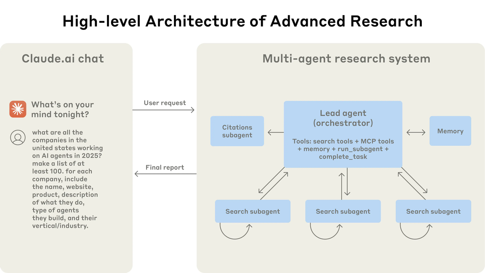
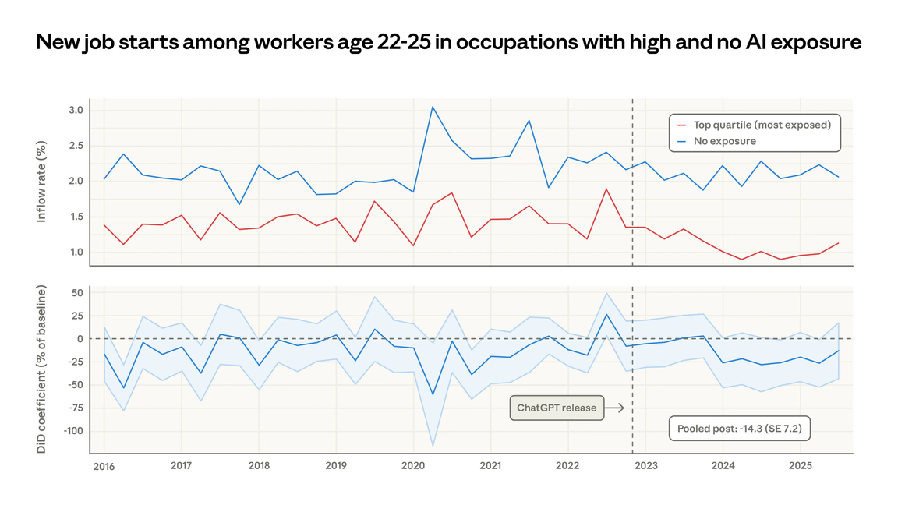

AI agents are starting to modify work not so much by replacing entire occupations, but rather by changing the way that tasks are done in those occupations. Anthropic's reports suggest that the effect of AI on the workforce today is task-specific, uneven, concentrated in work with knowledge, and increasingly connected to automation through APIs and agentic ways. The most convincing evidence appears in software development, writing, education, customer service, data entry, and administrative work.
However, Anthropic's labor market evidence also warns against overemphasizing current job destruction: as of March 2026, Anthropic found no systematic increase in unemployment among highly AI-exposed workers, though it found suggestive evidence that young workers may be entering exposed occupations more slowly.
Understanding AI Agents and Workflows
The findings from Anthropic point to a fundamental shift in the workforce toward more supervisory, validating, coordinating, and managing roles for AI systems, and less direct production of outputs. Unlike regular chatbots, AI agents are able to utilize tools, execute multi-step procedures, and make real-time decisions on how to accomplish a task. Anthropic distinguishes between "workflows" — systems where language models and tools follow predefined code paths — and "agents" — systems where language models dynamically direct their own processes and tool use. This distinction matters critically for workforce analysis, as agents can move AI from simply assisting to performing tasks in a semi-autonomous way.
For instance, Anthropic's multi-agent research system enables a lead agent to spawn parallel subagents to search, evaluate, and synthesize information, demonstrating how agentic systems can scale research-like work beyond a single linear interaction.

The Economic Index and Task-Level Impact
One of the most useful empirical starting points is Anthropic's Economic Index, which looks at actual usage of Claude rather than merely forecasting future automation. Its first report analyzed around 4 million anonymized conversations on Claude.ai, aligning them with occupational tasks from O*NET. The main message is that the use of AI is not uniform across the economy: it is concentrated in computer and mathematical work, technical writing, education, administrative support, and other knowledge-work activities.
AI agents change work at the task level before they change occupations. — Anthropic Economic Index
Anthropic's evidence suggests that AI agents change work at the task level before they change occupations. In the first Economic Index report, only about 4% of occupations had AI use for 75% or more of their tasks, and about 36% of occupations had AI use for 25% or more of their tasks. This suggests that AI is spreading across jobs unevenly: some tasks are very affected, whereas other tasks remain largely human-driven. This task-based view is important because most jobs are mixtures of different activities. A software developer may write code, review architecture, collaborate with colleagues, debug systems, and make design decisions. AI agents may have a strong impact on debugging and generation of boilerplate code, but less on strategic design or organizational judgment.
Anthropic's own internal study confirms this trend. Engineers reported that they used Claude most often for correcting code errors and understanding codebases, and were less willing to fully delegate high-level design or strategic thinking. One of the key findings is that the state of AI today represents a mixture of augmentation and automation. In the first Economic Index report, 57% of Claude use was classified as augmentation, where the AI collaborated with the user, and 43% was classified as automation, where the AI directly performed a task. This finding makes it harder to argue that "AI will simply replace workers." AI agents can automate parts of tasks, but they also support workers by enabling learning, validation, brainstorming, and faster iteration.
Automation and Productivity in Business Settings
However, Anthropic also notes a shift toward more automated use in business and API settings. In the January 2026 Economic Primitives report, automated use was dominant in first-party API traffic. Office and administrative support tasks rose to 13% of API traffic by November 2025, suggesting that businesses are increasingly embedding AI into workflows like email management, document processing, CRM, scheduling, and customer support.
Anthropic's productivity work suggests that AI agents might save significant time on specific tasks. In its productivity gains report, Anthropic estimated that some curriculum-development tasks were completed in 11 minutes, while the same tasks would take 4.5 hours without AI. It also estimated 87% time savings for writing invoices, memos, and documents, and 80% time savings for some financial-analysis tasks. This doesn't mean that all workers will suddenly be more productive. Productivity improvements depend on how well AI tools are adopted, the type of tasks being done, the need for verification, and changes in organizational structure. Anthropic itself warns that productivity gains may be limited if businesses only speed up old tasks without changing workflows. A bigger shift might happen when companies reorganize meetings, review systems, quality control, and project management around AI agents.
Workforce Integration and Risks
Anthropic's internal research on the workplace shows both hope and concern. Employees reported using Claude in 60% of their work and experiencing a 50% boost in productivity. However, most said they could fully delegate only 0–20% of their tasks. This suggests that while AI is becoming a consistent partner, it isn't yet a fully independent worker. The same report also points to risks related to skill loss and reduced human interaction. Some employees were concerned that if Claude solves problems too quickly, workers might miss out on the valuable learning that comes from working through issues like code, documentation, and debugging on their own. Others noted that Claude became the first source for questions that used to be directed to colleagues, which could undermine mentorship and informal learning.

Labor Market Effects and Entry-Level Risks
AI agents impact the workforce in several interrelated ways. First, they speed up tasks by enabling workers to complete their current duties more rapidly, especially in software development, analysis, and teaching. Second, they automate routine digital tasks, making it easier to delegate activities like data entry, customer service, and administrative support to AI systems. Third, AI agents allow workers to expand their skills by taking on tasks outside their areas of expertise, such as backend engineers generating frontend code or researchers building dashboards. However, this also means that workers need to supervise, edit, and take responsibility for AI-generated results, especially in programming, law, and finance.
Finally, AI may pose entry risks for junior workers. Entry-level programmers, analysts, and support staff might have fewer opportunities if companies use AI for basic tasks. This aligns with Anthropic's broader finding that AI is currently used for both enhancing and automating work, with 57% of observed use supporting human capabilities and 43% handling tasks more directly.
The evidence regarding the labor market remains mixed. Anthropic's March 2026 report found no consistent rise in unemployment among workers most affected after late 2022. However, it did discover early signs that workers aged 22–25 were less likely to find new jobs in vulnerable occupations, with a 14% decline in job-finding rates compared to 2022. This indicates that the first effects of AI on employment may show up as fewer hiring opportunities for junior workers before leading to layoffs.
Policy and Organizational Responses
Anthropic believes that responses from policymakers should consider how quickly and widely AI is affecting the labor market. Its policy report discusses workforce training, retraining incentives, support for adjustments, financial tools, and ways to share the benefits generated by AI. The main takeaway is that governments and businesses should not wait for mass unemployment before taking action. They need to create monitoring systems, pathways for reskilling, and support structures for workers whose tasks are affected by automation.
For companies, the practical response is to redesign jobs to focus on human strengths: judgment, accountability, taste, relationship-building, ethics, and context. The future worker may not just "use AI"; they may manage multiple AI agents, verify results, decide what should not be automated, and take responsibility for final decisions.
Conclusion
According to Anthropic's reports, AI agents are already changing the workforce, but the impact is uneven, task-based, and still evolving. The most evident effects include productivity gains, automation of routine digital tasks, expanded worker capabilities, and new patterns of collaboration. The jobs most affected include computer programming, customer service, financial analysis, data entry, and administrative support. However, Anthropic's findings do not yet support a straightforward narrative of immediate widespread unemployment. Instead, the emerging picture shows a shift from direct task execution to AI supervision, validation, and organization.
The main challenge for policymakers is to ensure that these productivity gains are shared broadly while ensuring that workers, especially younger and entry-level employees, are not excluded from the learning opportunities that help build long-term skills.
Selected references
- Anthropic. (2025, October 14). Preparing for AI's economic impact: Exploring policy responses. Anthropic.
- Appel, R. E., Massenkoff, M., McCrory, P., McCain, M., Heller, R., Neylon, T., & Tamkin, A. (2026, January 15). Anthropic Economic Index report: Economic primitives. Anthropic.
- Hadfield, J., Zhang, B., Lien, K., Scholz, F., Fox, J., & Ford, D. (2025, June 13). How we built our multi-agent research system. Anthropic.
- Massenkoff, M., & McCrory, P. (2026, March 5). Labor market impacts of AI: A new measure and early evidence. Anthropic.
- Tamkin, A., & McCrory, P. (2025, November 25). Estimating AI productivity gains from Claude conversations. Anthropic.